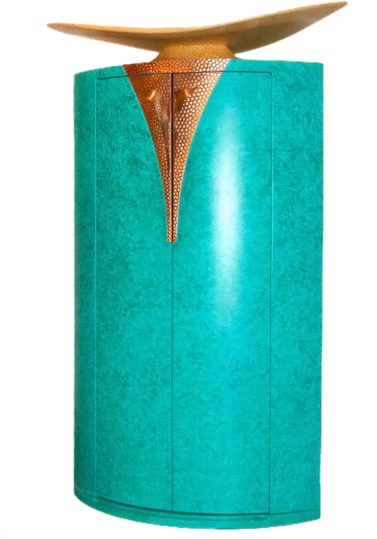
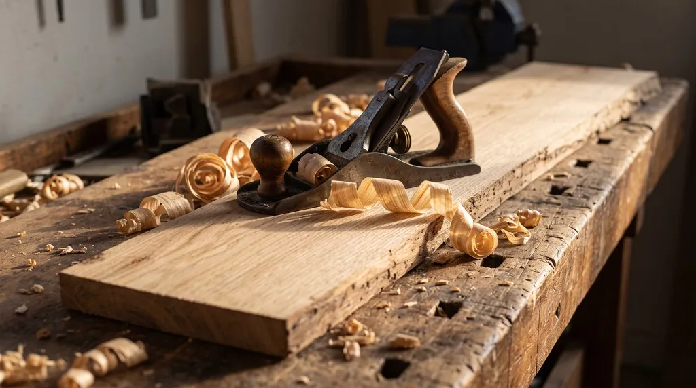
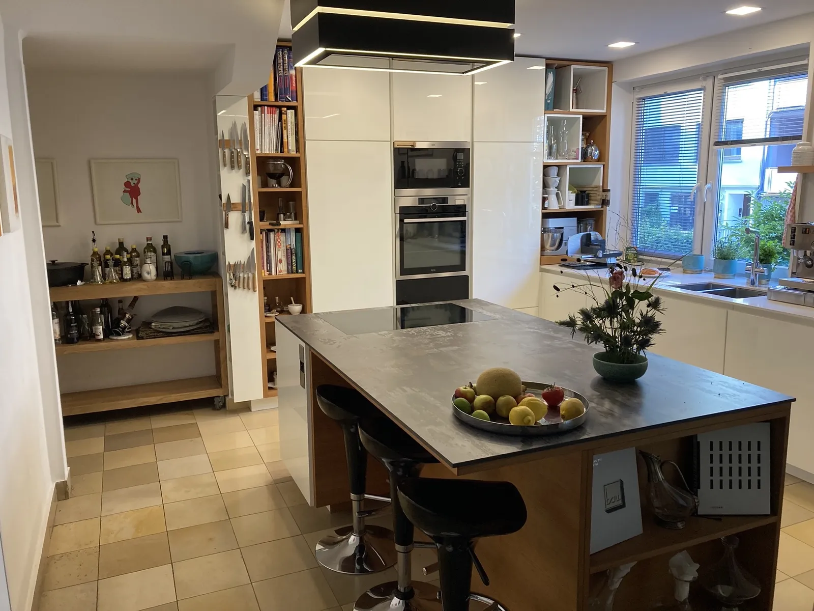
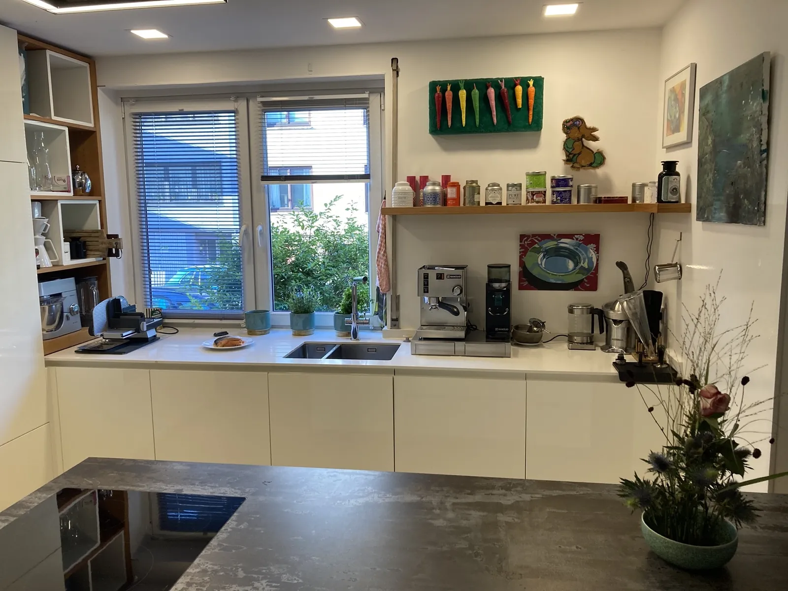
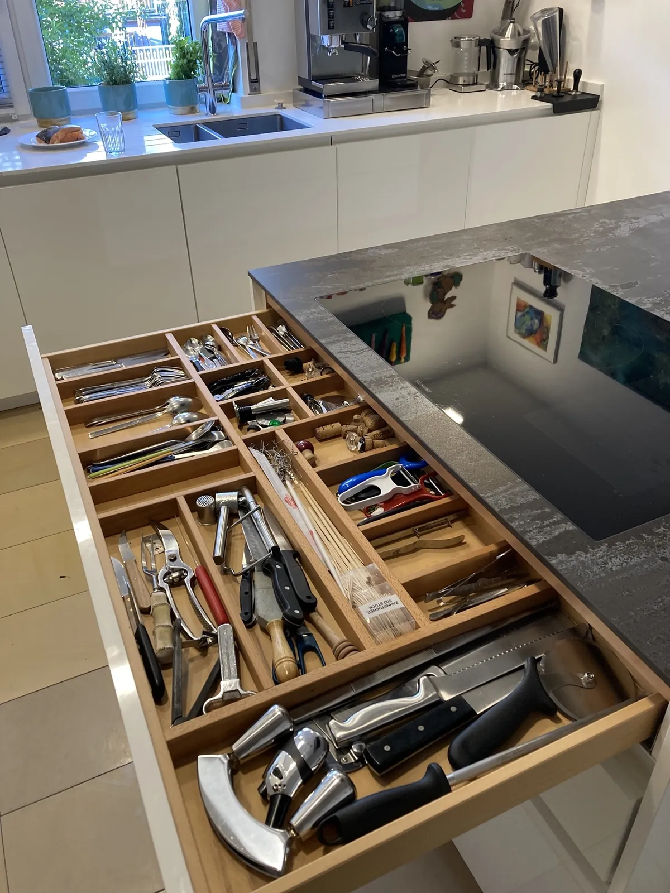
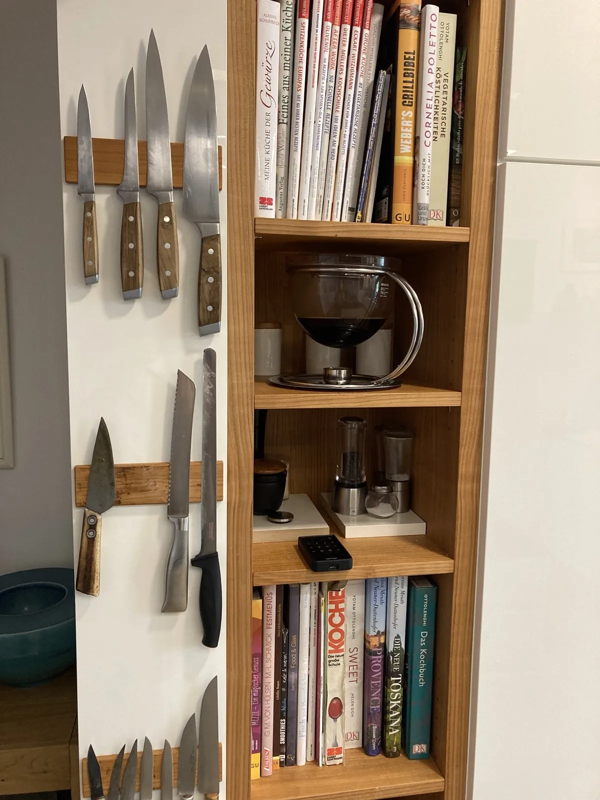
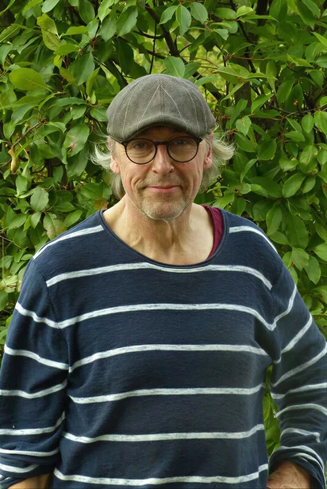

Küchen
Küchen mit Kochinsel, Hochschränken und offenen Holzregalen – inklusive durchdachter Innenausstattung bis zum Besteckeinsatz aus Massivholz.



„Mein Beruf und meine Leidenschaft ist das sorgsame und schonende Verarbeiten des schönsten und abwechslungsreichsten Naturstoffs: Holz.“Manfred Wölk
Jedes Möbel entsteht für einen bestimmten Ort und einen bestimmten Menschen. Deshalb gibt es bei Möbel in Holz keinen Katalog – sondern ein Gespräch, einen Entwurf und viel Handarbeit.
Küchen mit Kochinsel, Hochschränken und offenen Holzregalen – inklusive durchdachter Innenausstattung bis zum Besteckeinsatz aus Massivholz.
Schrankwände, Schiebetüren und Einbauten für Nischen und Dachschrägen. Passgenau bis auf den Millimeter – für Wohnzimmer, Schlafzimmer, Flur und Büro.
Skulpturale Einzelstücke mit Charakter: Schränke, Säulen und Objekte, die Mittel- und Ankerpunkt eines Raumes werden.
Schreibtische, Sideboards und Regalsysteme für Arbeitsräume, die funktionieren und gut aussehen – als Einzelstück oder komplette Einrichtung.
Bücherregale, Hängeschränke, Säulenschränke und Kleinmöbel – mit klaren Linien oder verspielten Details wie Schnitzereien.
Sofas mit geschwungenem Holzgestell, Hocker und Bänke – gebaut für den Alltag und dafür, lange zu bleiben.
Wir sprechen über Ihre Wünsche, den Raum und das Budget – gern direkt bei Ihnen vor Ort.
Aus Aufmaß und Ideen entsteht ein Entwurf mit Holzauswahl, Details und einem klaren Angebot.
Ihr Möbel wird in der Werkstatt in Ottersberg gefertigt – sorgfältig und mit Blick für die Maserung.
Lieferung und Einbau bei Ihnen, bis alles sitzt. Und wenn später etwas sein sollte: Sie wissen, wen Sie anrufen.
Klare weiße Fronten, eine Kochinsel mit dunkler Arbeitsplatte und offene Regale aus warmem Holz, die Bücher, Geschirr und Lieblingsstücke tragen. Ein Raum zum Kochen, Sitzen und Bleiben.



Ein kleiner Querschnitt aus vielen Jahren in der Werkstatt. Klicken Sie auf ein Bild für die große Ansicht – oder sehen Sie sich alle Arbeiten an.

Mein Name ist Manfred Wölk. Unter dem Namen Möbel in Holz entwerfe und baue ich in meiner Werkstatt in Ottersberg Möbel aus Massivholz – vom kleinen Hocker bis zur kompletten Küche.
Mein Handwerk habe ich mit einer Ausbildung zum Möbeltischler bei Bartels-Ibus Stilmöbel gelernt. Danach habe ich an der Fachoberschule für Gestaltung meinen Blick für Form und Farbe geschärft und an der Freien Kunststudienstätte Ottersberg mein Diplom gemacht – mit Solitärmöbeln. Seitdem verbinde ich beides: solides Tischlerhandwerk und den Anspruch, dass ein Möbel mehr sein darf als nur nützlich.
Was mich antreibt, ist das Material selbst: jede Maserung, jede Farbe, jeder Ast ist anders. Mein Anspruch ist, Holz so sorgsam und schonend zu verarbeiten, dass diese Eigenheiten sichtbar bleiben – und daraus Möbel entstehen, die genau zu den Menschen passen, für die sie gebaut sind.
Bei mir haben Sie von der ersten Idee bis zur Montage einen Ansprechpartner. Das macht die Wege kurz und die Ergebnisse persönlich.
Ob konkrete Idee oder erst ein Gefühl für den Raum: Rufen Sie an oder schreiben Sie mir. Ich helfe und berate Sie gern.
Manfred Wölk
Möbel in Holz
Quelkhorner Landstraße 3
28870 Ottersberg
Werkstatt: Quelkhorner Landstraße 15, 28870 Ottersberg
Mobil: 0162 8072255
Fax: 04293 1200
E-Mail: woelk@moebelinholz.de
Ausgebildeter Möbeltischler (Ausbildung bei Bartels-Ibus Stilmöbel)
Diplom der Freien Kunststudienstätte Ottersberg
Umsatzsteuer-Identifikationsnummer gemäß § 27a UStG: DE116729405
Manfred Wölk, Anschrift wie oben
Wir sind nicht bereit und nicht verpflichtet, an Streitbeilegungsverfahren vor einer Verbraucherschlichtungsstelle teilzunehmen.
Die Inhalte dieser Website wurden mit größter Sorgfalt erstellt. Für die Richtigkeit, Vollständigkeit und Aktualität können wir jedoch keine Gewähr übernehmen. Für Inhalte externer Websites, auf die wir verlinken, sind ausschließlich deren Betreiber verantwortlich; zum Zeitpunkt der Verlinkung waren keine Rechtsverstöße erkennbar. Werden uns Rechtsverletzungen bekannt, entfernen wir entsprechende Inhalte oder Links umgehend.
Texte, Fotos und Gestaltung dieser Website unterliegen dem deutschen Urheberrecht. Eine Verwendung außerhalb der Grenzen des Urheberrechts bedarf der schriftlichen Zustimmung. Das Bild im Kopfbereich der Startseite ist ein KI-generiertes Symbolbild.
brand-neu · Oliver Kranz, Halterner Straße 45, 45657 Recklinghausen · www.brand-neu.de
Wir freuen uns über Ihr Interesse an unserer Werkstatt. Der Schutz Ihrer persönlichen Daten ist uns wichtig. Nachfolgend informieren wir Sie gemäß Art. 13 und 14 der Datenschutz-Grundverordnung (DSGVO), welche personenbezogenen Daten wir beim Besuch dieser Website und bei einer Kontaktaufnahme verarbeiten, zu welchen Zwecken, auf welcher Rechtsgrundlage und welche Rechte Ihnen zustehen.
Verantwortlich für die Datenverarbeitung auf dieser Website ist:
Manfred Wölk, Möbel in Holz
Quelkhorner Landstraße 3, 28870 Ottersberg
Telefon: 0162 8072255
E-Mail: woelk@moebelinholz.de
Ein Datenschutzbeauftragter ist nicht benannt, da die gesetzlichen Voraussetzungen hierfür (§ 38 BDSG, Art. 37 DSGVO) nicht vorliegen. Bei Fragen zum Datenschutz wenden Sie sich bitte direkt an die oben genannten Kontaktdaten.
Wir verarbeiten personenbezogene Daten nur, soweit dies zur Bereitstellung einer funktionsfähigen Website sowie zur Bearbeitung Ihrer Anfragen erforderlich ist. Personenbezogene Daten sind alle Informationen, die sich auf eine identifizierte oder identifizierbare Person beziehen, zum Beispiel Name, E-Mail-Adresse oder IP-Adresse.
Soweit wir eine Einwilligung einholen, ist Art. 6 Abs. 1 lit. a DSGVO die Rechtsgrundlage. Bei der Verarbeitung zur Erfüllung eines Vertrags oder zur Durchführung vorvertraglicher Maßnahmen (z. B. Anfrage eines Angebots) dient Art. 6 Abs. 1 lit. b DSGVO als Rechtsgrundlage. Soweit eine Verarbeitung zur Erfüllung einer rechtlichen Verpflichtung erforderlich ist (z. B. steuerliche Aufbewahrungspflichten), stützen wir uns auf Art. 6 Abs. 1 lit. c DSGVO. Ist die Verarbeitung zur Wahrung unserer berechtigten Interessen erforderlich und überwiegen Ihre Interessen nicht, ist Art. 6 Abs. 1 lit. f DSGVO die Rechtsgrundlage.
Ihre Daten werden gelöscht oder gesperrt, sobald der Zweck der Speicherung entfällt. Eine darüber hinausgehende Speicherung erfolgt nur, wenn gesetzliche Aufbewahrungsfristen dies vorsehen, insbesondere nach § 147 AO und § 257 HGB (in der Regel sechs bis zehn Jahre für geschäftliche Korrespondenz, Angebote und Rechnungen).
Diese Website wird bei einem externen Dienstleister gehostet: brand-neu digital, Oliver Kranz, Halterner Straße 45, 45657 Recklinghausen, Deutschland (www.brand-neu.de). Der Hoster verarbeitet in unserem Auftrag alle Daten, die beim Aufruf der Website anfallen (siehe Abschnitt 4). Wir haben mit dem Hoster einen Vertrag über Auftragsverarbeitung nach Art. 28 DSGVO geschlossen, der sicherstellt, dass er die Daten nur nach unserer Weisung und unter Einhaltung der DSGVO verarbeitet. Rechtsgrundlage ist Art. 6 Abs. 1 lit. f DSGVO; unser berechtigtes Interesse liegt in einer sicheren, schnellen und zuverlässigen Bereitstellung unserer Website.
Bei jedem Aufruf dieser Website erfasst der Server automatisch folgende Informationen, die Ihr Browser übermittelt:
Die Verarbeitung ist erforderlich, um die Website auszuliefern, ihre Stabilität und Sicherheit zu gewährleisten und Missbrauch (z. B. Angriffe) zu erkennen. Rechtsgrundlage ist Art. 6 Abs. 1 lit. f DSGVO. Die Logfiles werden nach 14 Tagen automatisch gelöscht, sofern sie nicht zur Aufklärung eines konkreten Sicherheitsvorfalls benötigt werden. Eine Zusammenführung mit anderen Datenquellen oder eine Auswertung zu Marketingzwecken findet nicht statt.
Diese Website setzt keine Cookies und greift nicht auf Informationen in Ihrem Endgerät zu, die nicht für die technische Darstellung der Seite unbedingt erforderlich sind (§ 25 Abs. 2 TDDDG). Ein Cookie-Banner ist daher nicht notwendig.
Wir verwenden keine Analyse- oder Tracking-Werkzeuge (z. B. Google Analytics), keine Werbenetzwerke und keine Social-Media-Plugins. Schriftarten, Bilder und alle übrigen Bestandteile der Website werden ausschließlich von unserem eigenen Server geladen; beim Seitenaufruf werden keine Daten an Dritte wie Google übermittelt.
Wenn Sie uns per E-Mail oder Telefon kontaktieren, verarbeiten wir die von Ihnen mitgeteilten Daten (z. B. Name, E-Mail-Adresse, Telefonnummer, Inhalt Ihrer Anfrage, ggf. Fotos oder Maße Ihres Raums), um Ihr Anliegen zu bearbeiten und Ihnen ggf. ein Angebot zu erstellen. Rechtsgrundlage ist Art. 6 Abs. 1 lit. b DSGVO, sofern Ihre Anfrage auf einen Vertragsschluss abzielt, im Übrigen Art. 6 Abs. 1 lit. f DSGVO (unser berechtigtes Interesse an der Beantwortung von Anfragen).
Das Kontaktformular auf dieser Website überträgt keine Daten an unseren Server. Nach dem Ausfüllen wird lediglich Ihr eigenes E-Mail-Programm mit einer vorausgefüllten Nachricht geöffnet, die Sie selbst prüfen und absenden. Für die anschließende Verarbeitung gilt das oben zur Kontaktaufnahme per E-Mail Gesagte.
Wir löschen Ihre Anfrage, sobald sie abschließend bearbeitet ist und kein Vertrag zustande kommt. Kommt ein Auftrag zustande, bewahren wir die zugehörige Korrespondenz im Rahmen der gesetzlichen Aufbewahrungsfristen (siehe Abschnitt 2) auf.
Die Übertragung von E-Mails erfolgt in der Regel transportverschlüsselt, jedoch nicht durchgehend Ende-zu-Ende-verschlüsselt. Bitte senden Sie uns besonders schutzbedürftige Informationen daher nicht unverschlüsselt per E-Mail.
Sie sind weder gesetzlich noch vertraglich verpflichtet, uns personenbezogene Daten bereitzustellen. Ohne Ihre Kontaktdaten können wir Ihre Anfrage jedoch nicht beantworten. Eine automatisierte Entscheidungsfindung einschließlich Profiling im Sinne von Art. 22 DSGVO findet nicht statt.
Ihnen stehen gegenüber uns folgende Rechte hinsichtlich Ihrer personenbezogenen Daten zu:
Soweit wir Ihre Daten auf Grundlage berechtigter Interessen (Art. 6 Abs. 1 lit. f DSGVO) verarbeiten, haben Sie das Recht, aus Gründen, die sich aus Ihrer besonderen Situation ergeben, jederzeit Widerspruch gegen diese Verarbeitung einzulegen. Wir verarbeiten Ihre Daten dann nicht mehr, es sei denn, wir können zwingende schutzwürdige Gründe für die Verarbeitung nachweisen, die Ihre Interessen, Rechte und Freiheiten überwiegen, oder die Verarbeitung dient der Geltendmachung, Ausübung oder Verteidigung von Rechtsansprüchen.
Zur Ausübung Ihrer Rechte genügt eine formlose Nachricht an die in Abschnitt 1 genannten Kontaktdaten.
Wenn Sie der Ansicht sind, dass die Verarbeitung Ihrer Daten gegen die DSGVO verstößt, haben Sie das Recht, sich bei einer Datenschutz-Aufsichtsbehörde zu beschweren (Art. 77 DSGVO), insbesondere in dem Mitgliedstaat Ihres Aufenthaltsorts, Ihres Arbeitsplatzes oder des Orts des mutmaßlichen Verstoßes. Die für uns zuständige Aufsichtsbehörde ist:
Der Landesbeauftragte für den Datenschutz Niedersachsen
Prinzenstraße 5, 30159 Hannover
Telefon: 0511 120-4500
www.lfd.niedersachsen.de
Diese Website nutzt aus Sicherheitsgründen eine SSL- bzw. TLS-Verschlüsselung. Eine verschlüsselte Verbindung erkennen Sie daran, dass die Adresszeile Ihres Browsers mit „https://“ beginnt und ein Schloss-Symbol angezeigt wird.
Diese Website kann Links zu Websites anderer Anbieter enthalten. Für deren Datenverarbeitung sind ausschließlich die jeweiligen Betreiber verantwortlich. Erst wenn Sie einem Link folgen, werden Daten an den anderen Anbieter übertragen.
Wir passen diese Datenschutzerklärung an, sobald sich Änderungen an der Website oder an den rechtlichen Vorgaben ergeben. Es gilt jeweils die hier veröffentlichte aktuelle Fassung.
Stand: November 2026